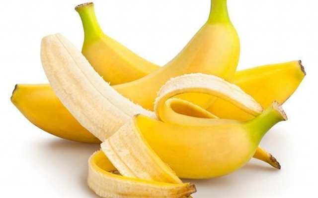

Tentangbuah.com
Pisang

Pisang adalah nama umum yang diberikan pada
tumbuhan terna raksasa berdaun besar memanjang dari suku Musaceae.
Beberapa jenisnya (Musa acuminata, M. balbisiana, dan M.
×paradisiaca) menghasilkan buah konsumsi yang dinamakan sama. Buah
ini tersusun dalam tandan dengan kelompok-kelompok tersusun menjari
yang disebut sisir.
Hampir semua buah pisang memiliki kulit berwarna kuning ketika
matang, meskipun ada beberapa yang berwarna jingga, merah, hijau,
ungu, atau bahkan hampir hitam. Buah pisang sebagai bahan pangan
merupakan sumber energi (karbohidrat) dan mineral, terutama kalium.
Manfaat Pisang
- Meredakan Nyeri Ulu Hati
- Mengandung Serat Tinggi
- Baik untuk Pencernaan
- Meningkatkan Stamina Olahraga
- Menurunkan Resiko Stroke
- Menurunkan Tekanan Darah
Tabel Harga Pisang
| Nama Jenis Pisang | Harga | |
|---|---|---|
| Per-Kg | Per-Buah | |
| Pisang Sunpride | 26.000 | 4.500 |
| Pisang Tanduk | 70.000 | 10.000 |
| Pisang Raja | 90.000 | 13.000 |
| Pisang Nangka | 45.000 | 9.000 |